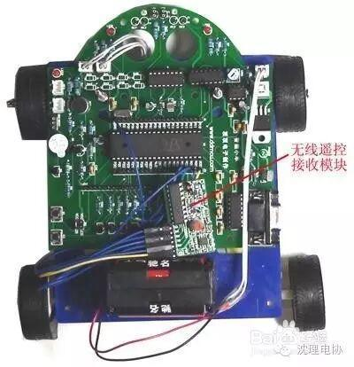

使用小程序
小车底板1块、车轴插片4片
车轮4只
车轴2根，垫片2只，铜螺帽2只
带齿轮箱的电机及104电容各2只
智能小车开发板1块（除DS18B20外，板上集成电路配备完整）
避障光电传感器1只（TCR T5000）、循迹光电传感器2只（RPR220）、速度光电传感器1只（RPR220）
双向插头排线4根、串口线1根、红外遥控器1只、固定电路板与底板的长螺丝、橡皮垫圈各2只、6节5号电池盒(因电池属易燃易爆物品,故不配送,请自行购买)
1
电池电压检测程序
开机后，数码管上显示出电池电压的值，当电池电压低于7V时，蜂鸣器鸣叫，表示电池电压低，需要更换电池。下图是小车显示的电池电压情况（显示的电压值为8.5V）：
2
模拟PWM控制小车速度程序
用单片机的IO口模拟PWM信号，控制小车的转速，具体要求是：开机后，小车按全速运转，当按下K1键时，小车运行的速度是全速的0.1，当按下K2键时，小车的转速是全速的0.5。
3
采用定时中断方法，控制小车的转速，具体要求是：开机后，小车按全速的0.2运转。定时器0中断处理函数：void Timer0(void) interrupt 1 //定时器0中断处理函数入口{ TH0=0xfc; //定时1ms TL0=0x66; EA=0; //关中断 tim=tim+1; //时间计数加1 if(tim<20){EN1=0;EN2=0;} else {EN1=1;EN2=1;} if(tim==100)tim=0; EA=1; //开中断}修改的方法是：改变上述语句if(tim<20){EN1=0;EN2=0;}中的tim的值，例如，将此改为if(tim<50){EN1=0;EN2=0;}，重新编译源程序，再下载到小车的单片机中，此时会发现小车的运转速度快了很多。
4
在智能小车上安装有话筒，要求采用声音可以控制小车的起停，具体要求是：开机后，小车运转，LED1、LED2指示灯亮；当拍一下巴掌或敲击一下器物发出响亮的声音时，小车停转，LED1、LED2指示灯熄灭；再次拍一下，小车继续运转，LED1、LED2指示灯又点亮。
在智能小车上安装有光敏电阻，能够感受到光线的变化情况，要求通过光敏电阻判断出白天和黑夜，当白天时（光线正常时，小车前面的两个指示灯LED1、LED2不亮），当夜晚时（光线暗时），小车前面的两个指示灯LED1、LED2点亮。
在智能小车上安装有红外遥控接收头，能够接收遥控器发出的信号，要求按下遥控器的01H键时，小车前进（前方的两个指示灯熄灭）；按下遥控器上的05H键时，小车停止（前方的两个指示灯熄灭）；按下遥控器上的04H键时，小车左转（左前方的指示灯点亮）；按下遥控器上的06H键时，小车右转（右前方的指示灯点亮）；按下遥控器上的09H键时，小车后退（前方的两个指示灯点亮）。遥控器上的键值能同时在LED数码管上显示出来。以下是按下遥控器上的05H时，小车显示的情况：
在智能小车上安装有红外遥控接收头，能够接收遥控器发出的信号。
要求按下遥控器的01H键时，小车前进（前方的两个指示灯熄灭）；按下遥控器上的05H键时，小车停止（前方的两个指示灯熄灭）；按下遥控器上的04H键时，小车左转（左前方的指示灯点亮）；按下遥控器上的06H键时，小车右转（右前方的指示灯点亮）；按下遥控器上的09H键时，小车后退（前方的两个指示灯点亮）。遥控器上的键值和状态能同时在LCD上显示出来（前时时显示FRONT，后退时显示BACK，左转时显示LEFT，右转时显示RIGHT，停止时显示STOP）。
以下是按下遥控器上的05H时，小车显示的情况：
在智能小车上设有温度传感器DS18B20的安装位置，DS18B20安装好后，能够感知外界的温度，要求外界温度能通过LED数码管显示出来。以下是显示的温度情况：
LCD温度显示程序
在智能小车上设有温度传感器DS18B20的安装位置，DS18B20安装好后，能够感知外界的温度，要求外界温度能通过LCD显示出来。以下是显示的温度情况：
避障小车程序
实现功能:在智能小车的头部，设有避障光电开关安装位置，如果装上此光电开关后，就能够感受到前方障碍物的，当检测到有障碍物时，可控制小车后退并转向，从而避开障碍物，达到避障的目的。
特别说明：（globalrobot.com.cn）本实例采用的是普通的光电开关（TCR T5000）进行避障，由于该开关检测距离较短（一般只有25px左右），因此，避障效果不是很好，只有当小车离障碍物较近时，才能检测到障碍物的存在，容易发生车头触碰障碍物的情况；要真正达到比较好的效果，需要采用性能较好的光电开关，如E3F-DS10C4等，其检测距离达250px以上，既使小车速度较快，一般也不会发生撞车的现象。另外，如果想全方位进行避障，还需要在小车的前面多装几个光电开关，对不同方位的障碍物进行检测，用户可根据情况自行设计和安装。
小车循迹程序
实现功能:在智能小车的头部，设有两个循迹光电开关安装位置，如果装上这个光电开关后，就能够感受到地面铺设的道路情况，从而控制小车按事先制作的黑色道路行进。
以下是小车循迹实验效果图:
小车里程计算程序
实现功能:当小车运行时，在数码管上可以显示出小车转动的圈数，并且每转一圈，指示灯LED3会闪烁一次，当按下K1键时，小车停止，同时，在数码管上显示出小车运行的距离。
以下显示的是小车转动的圈数:
无线控制小车程序
实现功能:将无线遥控接收模块的+5V、GND、10（D0）、11（D1）、12（D2）、13（D3）、VT脚用杜邦线分别接智能小车开发板的VCC、GND、P00~P04脚，如下图所示：

有语音功能的小车程序
实现功能:将ISD1700语音模块J1中的VCC、GND插针用杜邦线分别接智能小车开发板的VCC、GND脚，将ISD1700语音模块J4中的PLAY、FWD插针用杜邦线分别接智能小车开发板的P00~P01脚，如下图所示：
连接好后，可实现以下功能：打开电源开关，按下K1键后，小车开始前进，当遇到障碍特时，小车发出“太危险了”，然后后退并转向，进行避障。